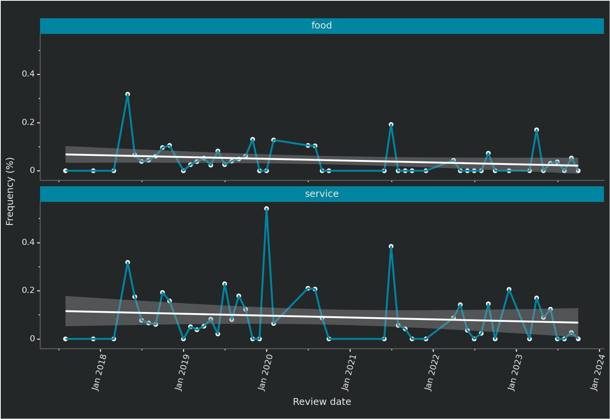

The application uses a variety of NLP techniques, including sentiment analysis, word frequency analysis, word trends over time and aspect based sentiment analysis.
The Playground section is a sandbox where users can experiment with the NLP models that are used by the tool. This section allows users to try out different features of the models, to see how they work, and to learn more about how NLP can be used to analyze TripAdvisor reviews.
We use selenium package to scrape reviews from a TripAdvisor hotel page, nltk to tokenize and pre-processing text data and hugging face’s transformers package for pre-trained models.
Background
Text mining is the process of extracting information and insights from text. It can be used to identify patterns, trends, and sentiment in large amounts of text data.
For the purpose of this article we’re gonna explore how text mining can be an evalutation tool for Hotel owners in order to understand customer’s feelings and toughts.
For the sake of clarity we’re gonna focus on two of many techniques used in the application:
Bigrams analysis
Word trends analysis
Bigrams analysis
A bigram or digram is a sequence of two adjacent elements from a string of tokens, which are typically letters, syllables, or words. A bigram is an n-gram for \(n=2\).
When we talk about bigrams we may be interested in visualizing all of the relationships among words simultaneously, rather than just the top few at a time.
As one common visualization, we can arrange the words into a network, or “graph”. Here we’ll be referring to a “graph” not in the sense of a visualization, but as a combination of connected nodes. A graph is composed of three main components:
from: the node an edge is coming from
to: the node an edge is going towards
weight: A numeric value associated with each edge
A further interpretation
Note that this is a visualization of a Markov chain, a common model in text processing. In a Markov chain, each choice of word depends only on the previous word. So in this case the chain starting from “hotel” would suggest “staff” then “friendly/helpful” as next words, by following each word to the most common words that follow it. 1
Code
import pandas as pdimport networkx as nximport matplotlib.pyplot as pltfrom plotnine import*def words_network_graph(dataset,tuple, raw, frequency):# read data data = pd.read_csv(dataset) def tupler(w):return (w.split(' ')[0],w.split(' ')[1]) data[tuple] = data[raw].apply(lambda x: tupler(x)) data = data[data['frequency']>=frequency]# create dictionary with counts d = data.set_index(tuple).T.to_dict('records')# network graph G = nx.Graph()# edges connectionsfor k, v in d[0].items(): G.add_edge(k[0], k[1], weight=(v*30))# nodes position pos = nx.spring_layout(G,k=2)# edges weight weights = nx.get_edge_attributes(G, 'weight').values() weights =list(weights) weights =list([w*0.0060for w in weights])# plot blue_munsell ='#0085A1' eerie_black ='#242728' fig, ax = plt.subplots(figsize=(7,5)) fig.set_facecolor(eerie_black) ax.set_axis_off() nx.draw_networkx(G, pos, width=weights, edge_color='white', node_color=blue_munsell, with_labels=False, ax=ax, node_size=50)# labels nudgedef nudge(pos, x_shift, y_shift):return {n:(x + x_shift, y + y_shift) for n,(x,y) in pos.items()} pos_nodes = nudge(pos, 0.01, 0.1) nx.draw_networkx_labels(G, pos=pos_nodes, ax=ax, font_color='white', font_size=7)
1
Defining a tupler function for handling csv file.
2
Defining a nudge function for handling labels position.
When talking about hotel reviews, we need to consider the time view of the customer experience.
From the owner perspective we may want to answer to questions like:
How much a product/service is mentioned in customers reviews?
How the product/service mention is changing over time?
This could give us a sense of the hotel changing ecosystem.
Let’s define
\(x= number \ of \ occurences \ of \ a \ word \ in \ a \ tokens \ list\)
\(n= total \ number \ of \ tokens \ in \ a \ list\)
We can calculate
\[
frequency = \frac{x}{n}
\]
Let’s compare a couple of common words such as service and food.
Please, note
The frequency of a word on tokens list length is calculated over a list of tokens without stopwords.
Code
def words_overtime_chart(words_list):# read data data = pd.read_csv('data.csv')# tokens list by review date wot = data.groupby('review_date', as_index=False)['tokens'].sum()# frequency of words on tokens lengthfor word in words_list: wot[word] = wot['tokens'].apply(lambda x: x.count(word)/len(x))# appending review_date for melt words_list.append('review_date') wot = wot[words_list].melt(id_vars=['review_date'], var_name='words', value_name='value') wot['value'] = wot['value']*100# plot blue_munsell ='#0085A1' eerie_black ='#242728' pl = ( ggplot(wot) + aes(x='review_date',y='value',group=1)+ geom_point(color='white')+ geom_line(colour=blue_munsell,size=1)+ geom_smooth(method='lm',colour='white')+ facet_wrap('~words',ncol=1)+ scale_x_date(date_labels ="%b %Y")+ theme_classic()+ theme(figure_size=(7,5), axis_text_x=element_text(angle=90,color='white'), axis_text_y=element_text(color='white'), axis_title_x=element_text(color='white'), axis_title_y=element_text(color='white'), strip_background=element_rect(fill=blue_munsell), panel_background=element_rect(fill=eerie_black), plot_background=element_rect(fill=eerie_black) )+ xlab('Review date')+ ylab('Frequency (%)') )print(pl)
1
We’re gonna use plotnine package
Code
words_overtime_chart(['food','service'])

Figure 2: Food and service over time trend
The conversation about food peaked in 2018 for then following a downward trend.
The conversation about service instead seems to have a more seasonal trend within an overall downward trend.
Conclusions
As just an NLP exercise this article aim to show potentiality of text mining for business purposes, as well as it could be a powerful tool to gather insights on a product or a service.
You can find the source code on top of this article.